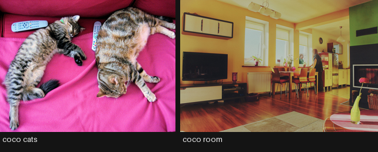
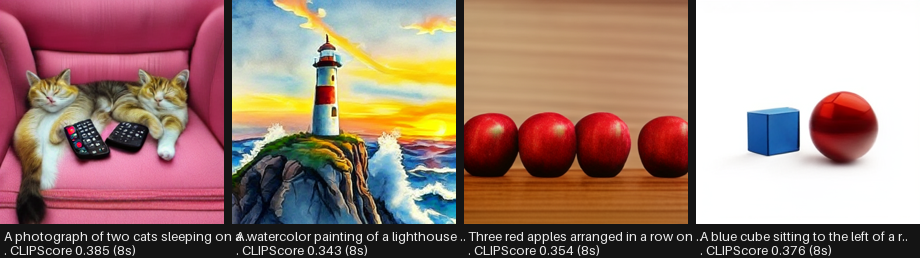
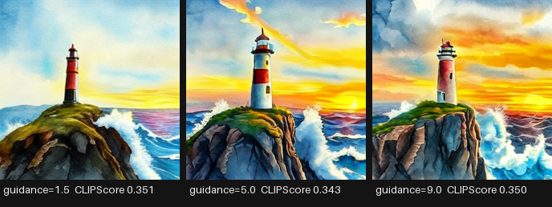
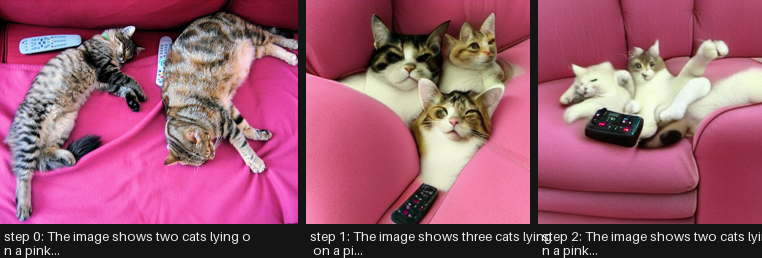
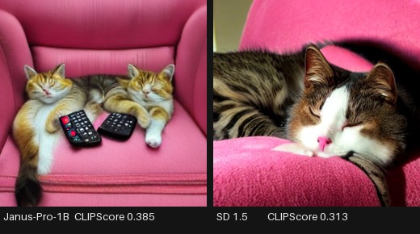
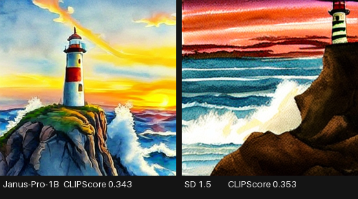
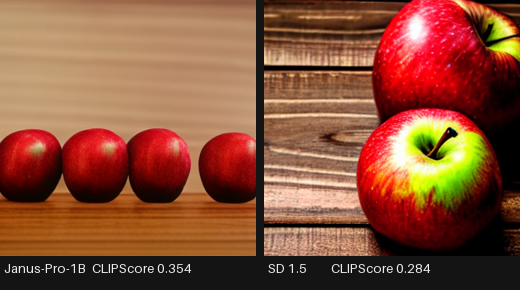
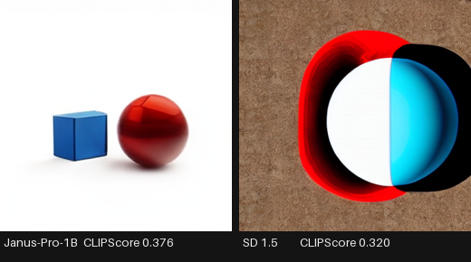
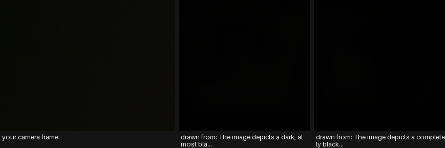

Everything to know about unified multimodal models: what “one model for every modality” actually buys, why Janus decoupled its two image encoders, how to measure the unification tax, the mid-2026 landscape, and runnable code that understands and generates from one 1B model.
Author
Benedict Thekkel
1. What is Any-to-Any?
Any-to-any is the family where one set of weights both understands and generates across modalities. Text, images, audio and video go in; text, images and audio come out. The tag on the Hugging Face Hub covers models as different as Janus-Pro (image understanding + image generation), Qwen3-Omni (text/image/audio/video in, text and speech out) and Emu3 (everything as one token stream).
The defining property is not the number of input modalities - Multimodal/01 already takes images and text. It is that generation and understanding share the model. A VLM can describe an image; an any-to-any model can describe it and draw one.
Input. Any interleaved combination of text, images, audio and video.
Output. Text, plus at least one non-text modality - images (Janus, Emu3, BAGEL), speech (Qwen-Omni, MiniCPM-o, Moshi), or both.
Neighbouring task
Difference
Typical tools
Image-text-to-text (Multimodal/01)
Understanding only; text out
Qwen3-VL, InternVL3
Text-to-image (Computer_Vision/04)
Generation only; no understanding
FLUX, SD3.5
Audio-text-to-text (Multimodal/00)
Audio in, text out; cannot speak
Granite Speech, Qwen2-Audio
Image-text-to-image (Multimodal/02)
Editing; a diffusion model, not a unified one
InstructPix2Pix, FLUX Kontext
Video-text-to-text (Multimodal/06)
Video in, text out
Qwen3-VL, SmolVLM2
Why anyone wants this. Three arguments, of decreasing strength:
Interleaved reasoning. A model that can generate an image mid-answer can sketch, revise and reason visually. Chain-of-thought with pictures is only possible if generation is inside the model.
Deployment simplicity. One model, one server, one set of weights, instead of a router plus five specialists.
Transfer. The hope that understanding and generation help each other - that learning to draw a cat teaches you what a cat is. Evidence for this is genuinely mixed, and section 12 measures it directly.
The honest counter-argument. A routed pipeline of specialists is usually better and cheaper in 2026. Whisper plus Qwen3-VL plus FLUX beats any single unified model at each individual task, and each part can be upgraded independently. Unified models win on latency for interleaved outputs, on conversational speech (where a cascade’s turn-taking is audibly wrong), and on the research bet that this is where the field ends up. This notebook runs both and says which is which.
2. Real-World Use Cases
Use case
Domain
Consumes / produces
Dominant constraint
Voice assistants with vision
Consumer devices, wearables
Speech + camera -> spoken answer
Full-duplex latency; a cascade’s turn-taking feels broken
Creative co-pilots
Design, marketing
Reference images + instructions -> images and copy together
Interleaved output; iteration speed over single-shot quality
Accessibility companions
Assistive tech
Camera + spoken question -> spoken answer
End-to-end latency; on-device privacy
Interactive tutoring
EdTech
Student question -> explanation with generated diagrams
Diagram correctness; generation inside the reasoning loop
Customer support agents
Any
Screenshot + voice -> spoken fix, annotated image
One model to deploy and monitor; consistency of persona
Robotics and embodied agents
Robotics
Camera + audio + instruction -> actions, speech
On-robot compute; real-time loop
Game NPCs and virtual characters
Games, entertainment
Player speech + scene -> speech, expressions
Latency and personality consistency; cost per session
Content production pipelines
Media
Script -> images, voice-over, video assets
Quality per asset (specialists usually win here)
Translation with voice preservation
Localisation
Speech in language A -> speech in language B
Prosody and speaker identity across languages
Meeting agents
Productivity
Screen + audio -> notes, spoken summary
Long context; audio and visual streams aligned in time
What the demos hide. Four realities.
Latency, not quality, is the reason to unify. Where any-to-any genuinely beats a pipeline is conversational speech: Qwen3-Omni emits its first audio packet in roughly 234 ms, where an ASR-plus-LLM-plus-TTS cascade is well over a second and cannot be interrupted mid-sentence. If your product is not conversational, the pipeline is probably better.
The unification tax is real but shrinking. Early unified models (2023-24) were clearly worse at each task than same-size specialists. Janus’s decoupled encoders and Qwen-Omni’s Thinker-Talker split narrowed it a lot. It has not closed, and section 12 measures what remains at this size.
Deployment is harder, not easier. One model sounds simpler until you need to scale image generation and speech independently, or upgrade only the ASR. Serving frameworks handle a text LLM well; a model with a VQ image decoder and a streaming speech head is a bespoke deployment.
Safety surface multiplies. A model that generates images and speech inherits every risk of both, plus new ones (voice cloning, image generation from a spoken instruction with no text audit trail). Watermarking and provenance need to cover every output modality.
3. How Any-to-Any Models Work
The central question is: how do non-text modalities become tokens, and how do tokens become non-text outputs? Four answers, all in production somewhere.
Discrete tokens for everything (Chameleon 2024, Emu3 2024). Quantise images with a VQ-VAE and audio with a neural codec, so every modality is literally vocabulary. Then it is one transformer with one next-token objective, and interleaved generation falls out for free. Emu3 showed this scales to video. The costs: VQ quantisation discards detail (image quality lags diffusion), and long sequences (an image is 1,024+ tokens) make training expensive.
Decoupled encoders, shared decoder (Janus 2024, Janus-Pro 2025). The key insight of the Janus line: understanding and generation want different image representations. Understanding wants high-level semantics (SigLIP features); generation wants low-level detail suitable for reconstruction (VQ tokens). Forcing one encoder to serve both was hurting both. Janus uses two separate vision encoders feeding one autoregressive transformer, and Janus-Pro (Jan 2025) scaled it to 1B/7B with a three-stage training recipe, beating DALL-E 3 and SD3-Medium on GenEval at 7B. This notebook runs the 1B.
Diffusion head on a language model (Transfusion 2024, BAGEL 2025, Show-o). Keep the LLM autoregressive for text but attach a diffusion head for images, trained with a joint next-token + denoising objective. Better image quality than VQ, at the cost of a more complicated model and sampler.
Thinker-Talker for speech (Qwen2.5-Omni 2025, Qwen3-Omni 2025). Split the model: a “Thinker” LLM reasons over all input modalities and produces text and hidden states; a “Talker” autoregressive speech decoder consumes those hidden states and streams codec tokens to a vocoder. Because the Talker reads the Thinker’s hidden states rather than its finished text, speech can start before the sentence is complete - which is where the sub-250 ms first-packet latency comes from. TMRoPE aligns audio and video positions in real time so a video’s soundtrack and pixels stay synchronised.
Mid-2026 state. Qwen3-Omni (30B-A3B MoE) is the strongest open omni model: 119 text languages, 19 speech-in, 10 speech-out, competitive with same-size specialists on audio and vision while also speaking. Janus-Pro remains the cleanest small demonstration of unified understanding-plus-image-generation. Emu3 and BAGEL are the research directions. Meanwhile, on any individual task, a specialist of the same size still usually wins - the interesting question is by how much, and section 12 answers it for this hardware.
4. Evaluation Metrics
There is no single any-to-any metric, and any paper that reports one is hiding something. Evaluate each direction separately, then measure what unification cost.
Understanding - the standard VLM suite: MMMU, MMBench, MMStar, POPE for hallucination, DocVQA for text-in-image (Multimodal/01, 04, 05). Accuracy after normalisation.
Image generation - GenEval (compositional prompt following: counting, colours, position, two-object binding) and DPG-Bench (dense prompts) have replaced FID as the headline. FID measures distributional similarity to a reference set and correlates poorly with what anyone cares about. CLIPScore is the cheap proxy used in this notebook: cosine between the generated image and the prompt.
Speech generation - WER of an ASR model transcribing the output (does it say the words), speaker similarity, MOS or UTMOS for naturalness, and first-packet latency for conversational use.
Cross-modal consistency - the metric unique to this family, and the one worth building yourself: take an image, caption it, regenerate from the caption, and re-caption. If understanding and generation share a world model, the round trip should be stable. Section 10 implements exactly this.
The unification tax - the honest headline number. Take a unified model and a same-size specialist for each direction, evaluate both on the same task, and report the gap. It is the only number that answers “should I use this”.
The cell below sets up CLIPScore and the round-trip similarity used later.
import numpy as npimport torchfrom transformers import CLIPModel, CLIPProcessor# CLIP is the measuring stick for this notebook: 150M params, small enough to keep# resident while a 1B unified model runs, and the standard cheap proxy for both# prompt-following (CLIPScore) and cross-modal round-trip stability._clip_id ="openai/clip-vit-base-patch32"class ClipMetrics:"CLIPScore (image vs prompt) and embedding similarities for the round-trip test."def__init__(self, device, cache_dir=None):self.device = deviceself.model = CLIPModel.from_pretrained(_clip_id, cache_dir=cache_dir).to(device).eval()self.proc = CLIPProcessor.from_pretrained(_clip_id, cache_dir=cache_dir)def image_embedding(self, image): inputs =self.proc(images=image, return_tensors="pt").to(self.device)with torch.inference_mode(): f =self.model.get_image_features(**inputs).pooler_outputreturn torch.nn.functional.normalize(f.float(), dim=-1).cpu()def text_embedding(self, text): inputs =self.proc(text=[text], return_tensors="pt", padding=True, truncation=True).to(self.device)with torch.inference_mode(): f =self.model.get_text_features(**inputs).pooler_outputreturn torch.nn.functional.normalize(f.float(), dim=-1).cpu()def clip_score(self, image, prompt):"Cosine between a generated image and the prompt it was generated from.\n\n The cheap stand-in for GenEval. It rewards presence of the named concepts and is\n largely blind to counting, spatial relations and attribute binding - which is\n exactly why GenEval exists. Treat it as a smoke test, never as a ranking.\n "returnfloat((self.image_embedding(image) @self.text_embedding(prompt).T).item())def image_similarity(self, a, b):"Cosine between two images - used for the round-trip stability check."returnfloat((self.image_embedding(a) @self.image_embedding(b).T).item())def text_similarity(self, a, b):"Cosine between two captions - the other half of the round trip."returnfloat((self.text_embedding(a) @self.text_embedding(b).T).item())print("CLIPScore is a proxy. What it cannot see:")for claim in ["'three red cubes' vs 'two red cubes' (counting)","'a cat left of a dog' vs 'a dog left of a cat' (spatial relations)","'a red cube and a blue sphere' with the colours swapped (attribute binding)"]:print(" -", claim)print("GenEval and DPG-Bench exist to measure precisely those. Use them for real numbers.")
CLIPScore is a proxy. What it cannot see:
- 'three red cubes' vs 'two red cubes' (counting)
- 'a cat left of a dog' vs 'a dog left of a cat' (spatial relations)
- 'a red cube and a blue sphere' with the colours swapped (attribute binding)
GenEval and DPG-Bench exist to measure precisely those. Use them for real numbers.
This notebook uses a handful of COCO val2017 photos plus hand-written prompts, and measures with the CLIP proxies above. That is a smoke test by construction: real generation numbers come from GenEval’s detector-based grader over 553 prompts, and real understanding numbers from the MMMU/MMBench harness.
the frontier; native image generation in-conversation
Who wins what. On image generation quality, dedicated diffusion models (FLUX, Qwen-Image, SD3.5) still beat every open unified model, though Janus-Pro-7B closed the gap on prompt following. On understanding, a same-size VLM specialist wins. On speech conversation, unified models win outright - a cascade cannot do full duplex. On breadth per deployment, Qwen3-Omni is unmatched in open weights.
What fits this 12 GB box. Janus-Pro-1B (4.2 GB, ~3 GB VRAM) runs both directions comfortably and is the notebook’s workhorse. Qwen2.5-Omni-3B is a 12 GB download and sits behind RUN_HEAVY. Janus-Pro-7B, Emu3, BAGEL and Qwen3-Omni are all out of reach on download size, VRAM or both. The specialists used as controls - Qwen3-VL-2B for understanding, Stable Diffusion 1.5 for generation - both fit alongside.
7. Setup
Janus is transformers-native (JanusForConditionalGeneration, JanusProcessor), so no vendor package is needed; the diffusion control uses diffusers. Package roles:
generation_mode="image" switches the model onto its VQ generation head; decode_image_tokens runs the VQ decoder; postprocess turns the tensor into uint8 pixels. 576 tokens is one 384x384 image at 24x24 latent patches.
Three sharp edges, none of them obvious. They are handled by patch_janus / janus_to_pil in the Setup cell and by the comments on janus_understand and janus_generate, but each costs real debugging time, so they are worth naming:
Do not use apply_chat_template(..., tokenize=True) on a single conversation.JanusProcessor.__call__ prepends this checkpoint’s default system prompt with [f"{SYSTEM}{s}" for s in text], and a bare string iterates character by character - the prompt becomes a batch of single letters, the <image_placeholder> token vanishes, and generate dies with Image features and image tokens do not match, tokens: 0. Render with tokenize=False, then call the processor with explicit lists.
generate(generation_mode="image") is broken in transformers 5.13 and 5.14: it calls _prepare_static_cache without the prefill_chunk_size argument that was added to that method’s signature. patch_janus binds a default, and its signature check makes it a no-op once upstream is fixed. The same function also crashes on guidance_scale <= 1: it doubles the batch for CFG but only appends the processor that folds it back when the scale is strictly greater than 1.
postprocess(return_tensors="PIL.Image.Image") - the call the Janus docs give - now raises, because that string is forwarded into TensorType, which accepts only pt/np/mlx. Ask for "pt" and convert to PIL yourself, as above. Relatedly, decode_image_tokens must be called inside the inference_mode block that produced the tokens, or its codebook lookup raises Inference tensors cannot be saved for backward.
One more failure mode worth recognising: this checkpoint’s model.safetensors is 3.9 GB, and an interrupted download leaves a sparse file of the correct size that loads without any error and silently yields all-zero weights - every answer then comes back as !!!!!!!!. If you see that, compare du -h with du -h --apparent-size on the cached blob and re-download.
All downloads land in DL_tasks/datasets/, which is gitignored.
# transformers for Janus and the understanding control, diffusers for the generation control.# %pip install -q torch transformers diffusers accelerate datasets pillow pandas pyecharts
import ctypesimport ctypes.utilimport functoolsimport gcimport inspectimport timeimport urllib.requestfrom pathlib import Pathimport torchfrom dotenv import find_dotenv, load_dotenvfrom PIL import Imagefrom transformers.generation.utils import GenerationMixin# Knowledge/.env sets HF_TOKEN - authenticated HF Hub requests get higher rate limitsload_dotenv(find_dotenv(usecwd=True))device ="cuda:0"if torch.cuda.is_available() else"cpu"dtype = torch.float16 if device !="cpu"else torch.float32if device !="cpu":print(torch.cuda.get_device_name(0))print("device:", device, "| dtype:", dtype)# Sections whose download is over ~8 GB sit behind this (Qwen2.5-Omni-3B is ~12 GB).RUN_HEAVY =FalseSEED =1234def generator(seed=SEED):"A fresh seeded torch generator on the compute device."return torch.Generator(device=device).manual_seed(seed)def vram(tag=""):"Report current GPU memory (allocated / reserved). No-op on CPU."if torch.cuda.is_available(): alloc = torch.cuda.memory_allocated() /1e9 reserved = torch.cuda.memory_reserved() /1e9print(f"VRAM {tag:22s}{alloc:5.2f} GB allocated / {reserved:5.2f} GB reserved")def free_memory():"Collect garbage and hand freed VRAM back to the CUDA allocator.\n\n Call right after `del`-ing a model you are done with: `del model; free_memory()`.\n `del` drops the Python reference; this reclaims the RAM and releases the VRAM.\n " gc.collect()if torch.cuda.is_available(): torch.cuda.empty_cache() torch.cuda.ipc_collect()# glibc keeps freed CPU allocations in its arenas instead of returning them to the# OS, so RSS compounds across model sections. malloc_trim(0) hands the freed arenas# back. See dl-visualization-and-memory.instructions.md - not optional on a 12 GB box.try: ctypes.CDLL(ctypes.util.find_library("c") or"libc.so.6").malloc_trim(0)exceptException:pass# --- Janus image-generation workarounds (transformers 5.13 / 5.14) ------------------# Janus is transformers-native, but two upstream bugs sit in its generation path. Both# are still present in 5.14.1. They live here rather than inline because sections 8, 9,# 12 and the live demo all load Janus and all need them.def patch_janus(model):"Bug 1: `generate(generation_mode='image')` calls `_prepare_static_cache` without the\n `prefill_chunk_size` argument that was added to that method's signature, so image\n generation dies with a TypeError before producing a single token. Bind a default.\n\n The signature check makes this a no-op the moment the upstream call site is fixed.\n " params = inspect.signature(GenerationMixin._prepare_static_cache).parametersif"prefill_chunk_size"in params and params["prefill_chunk_size"].default is inspect.Parameter.empty: model._prepare_static_cache = functools.partial( model._prepare_static_cache, prefill_chunk_size=None)return modeldef janus_to_pil(processor, decoded):"Bug 2: `postprocess(return_tensors='PIL.Image.Image')` - the call the Janus docs\n give - forwards that string into `TensorType`, which now accepts only pt/np/mlx, so\n it raises ValueError. Ask for 'pt' (uint8 CHW) and do the PIL conversion here.\n " pixels = processor.postprocess(list(decoded.float()), return_tensors="pt")["pixel_values"]return [Image.fromarray(px.permute(1, 2, 0).cpu().numpy()) for px in pixels]# All downloads go to DL_tasks/datasets/ (gitignored)DATA_DIR = Path("../../datasets")DATA_DIR.mkdir(exist_ok=True)HF_CACHE =str(DATA_DIR /"hf_cache")metrics = ClipMetrics(device, cache_dir=HF_CACHE)vram("clip loaded")
from IPython.display import displayfrom PIL import Image, ImageDraw, ImageFontSOURCES = {"cats": ("http://images.cocodataset.org/val2017/000000039769.jpg", "coco_cats.jpg"),"room": ("http://images.cocodataset.org/val2017/000000000139.jpg", "coco_room.jpg"),}images = {}for key, (url, fname) in SOURCES.items(): path = DATA_DIR / fnameifnot path.exists(): urllib.request.urlretrieve(url, path) images[key] = Image.open(path).convert("RGB")cats, room = images["cats"], images["room"]# Prompts chosen so CLIPScore has something to say and GenEval-style weaknesses show up.GEN_PROMPTS = ["A photograph of two cats sleeping on a pink couch, two remote controls beside them.","A watercolor painting of a lighthouse on a cliff at sunset, waves crashing below.","Three red apples arranged in a row on a wooden table, studio lighting.","A blue cube sitting to the left of a red sphere on a white background.",]def gallery(imgs, labels, height=224):"Lay several PIL images side by side on one canvas with captions underneath." font = ImageFont.load_default(size=13) thumbs = [im.resize((int(height * im.width / im.height), height)) for im in imgs] gap, band =8, 34 canvas = Image.new("RGB", (sum(t.width for t in thumbs) + gap * (len(thumbs) -1), height + band), (20, 20, 20)) d = ImageDraw.Draw(canvas) x =0for t, label inzip(thumbs, labels): canvas.paste(t, (x, 0))for i, line inenumerate([label[:40], label[40:80]]): d.text((x +4, height +4+14* i), line, fill=(235, 235, 235), font=font) x += t.width + gapreturn canvasdisplay(gallery([cats, room], ["coco cats", "coco room"]))print("generation prompts:")for p in GEN_PROMPTS:print(" -", p)

generation prompts:
- A photograph of two cats sleeping on a pink couch, two remote controls beside them.
- A watercolor painting of a lighthouse on a cliff at sunset, waves crashing below.
- Three red apples arranged in a row on a wooden table, studio lighting.
- A blue cube sitting to the left of a red sphere on a white background.
8. Janus-Pro-1B - the understanding half
Janus-Pro (DeepSeek, January 2025) is the cleanest small demonstration of a unified model, and its central design decision is worth stating precisely.
Earlier unified models used one vision encoder for both jobs. That is a conflict: understanding wants high-level semantic features (what is this, what is it doing), while generation wants low-level detail that a decoder can reconstruct pixels from. Optimising one encoder for both degraded both. Janus decouples them - a SigLIP encoder for understanding, a VQ tokeniser for generation - while keeping a single autoregressive transformer that both paths feed into. The unification stays where it is useful (the reasoning core) and disappears where it was harmful (the input representation).
Janus-Pro added a three-stage training recipe, 72M synthetic aesthetic samples for generation, and scaled to 1B and 7B. This section uses the understanding path; section 9 uses the generation path; they are the same weights.
Expect the understanding to be decent-but-not-great at 1B - section 12 measures the gap against a same-size specialist.
from transformers import JanusForConditionalGeneration, JanusProcessorjanus_id ="deepseek-community/Janus-Pro-1B"janus_proc = JanusProcessor.from_pretrained(janus_id, cache_dir=HF_CACHE)janus = patch_janus(JanusForConditionalGeneration.from_pretrained( janus_id, dtype=dtype, device_map=device, cache_dir=HF_CACHE).eval())vram("janus loaded")def janus_understand(image, prompt, max_new_tokens=160):"The understanding path: SigLIP encoder -> shared transformer -> text."# Render the template and call the processor as two steps, both with explicit lists.# Do NOT use the one-shot apply_chat_template(..., tokenize=True): JanusProcessor# does `[f"{SYSTEM_PROMPT}{s}" for s in text]` and this checkpoint sets# use_default_system_prompt=True, so a bare string gets iterated CHARACTER by# character - a 48-char prompt becomes a 48-row batch of single letters, the# <image_placeholder> token never survives, and generate() dies with# "Image features and image tokens do not match, tokens: 0". text = janus_proc.apply_chat_template( [{"role": "user", "content": [{"type": "image", "image": image}, {"type": "text", "text": prompt}]}], add_generation_prompt=True, tokenize=False, ) inputs = janus_proc(text=[text], images=[image], return_tensors="pt").to(janus.device, dtype) n = inputs["input_ids"].shape[1]with torch.inference_mode(): out = janus.generate(**inputs, max_new_tokens=max_new_tokens, do_sample=False, generation_mode="text")return janus_proc.batch_decode(out[:, n:], skip_special_tokens=True)[0].strip()for prompt in ["Describe this image in one detailed sentence.","How many cats are in this image? Answer with a number.","Is there a dog in this image? Answer yes or no."]: t0 = time.perf_counter() answer = janus_understand(cats, prompt)print(f"> {prompt}\n [{time.perf_counter() - t0:4.1f}s] {answer}\n")
[transformers] The tied weights mapping and config for this model specifies to tie model.language_model.embed_tokens.weight to lm_head.weight, but both are present in the checkpoints with different values, so we will NOT tie them. You should update the config with `tie_word_embeddings=False` to silence this warning.
[transformers] Passing `generation_config` together with generation-related arguments=({'guidance_scale'}) is deprecated and will be removed in future versions. Please pass either a `generation_config` object OR all generation parameters explicitly, but not both.
[transformers] Both `max_new_tokens` (=160) and `max_length`(=20) seem to have been set. `max_new_tokens` will take precedence. Please refer to the documentation for more information. (https://huggingface.co/docs/transformers/main/en/main_classes/text_generation)
[transformers] Both `max_new_tokens` (=160) and `max_length`(=20) seem to have been set. `max_new_tokens` will take precedence. Please refer to the documentation for more information. (https://huggingface.co/docs/transformers/main/en/main_classes/text_generation)
> Describe this image in one detailed sentence.
[ 0.9s] The image shows two cats lying on a pink couch, with a remote control placed between them.
[transformers] Both `max_new_tokens` (=160) and `max_length`(=20) seem to have been set. `max_new_tokens` will take precedence. Please refer to the documentation for more information. (https://huggingface.co/docs/transformers/main/en/main_classes/text_generation)
> How many cats are in this image? Answer with a number.
[ 0.2s] 2.
> Is there a dog in this image? Answer yes or no.
[ 0.2s] No.
9. Janus-Pro-1B - the generation half
Same weights, different head. generation_mode="image" switches the model onto its VQ path: it autoregressively predicts 576 image tokens (a 24x24 latent grid), then the VQ decoder turns them into a 384x384 image.
Three things worth knowing before reading the output:
guidance_scale is classifier-free guidance over token logits, not diffusion guidance. 5.0 is the documented default; higher follows the prompt harder and reduces diversity.
It is autoregressive, so it is sequential. 576 tokens one at a time, which at 1B is a few seconds per image on this card - slower per image than a distilled diffusion model, and with no step-count knob to trade quality for speed.
VQ quantisation caps the fidelity. A 16k-entry codebook cannot represent fine texture the way a continuous latent diffusion VAE can. This is the main reason unified autoregressive models lag diffusion on image quality, and why the 2025 designs (BAGEL, Transfusion) bolt a diffusion head on instead.
Watch the last two prompts in particular: counting (“three red apples”) and spatial binding (“blue cube left of a red sphere”) are the classic compositional failures that GenEval was built to catch and that CLIPScore will happily forgive.
def janus_generate(prompt, guidance_scale=5.0, seed=SEED, num_images=1):"The generation path: text -> 576 VQ tokens -> VQ decoder -> a 384x384 PIL image." inputs = janus_proc(text=[prompt] * num_images, generation_mode="image", return_tensors="pt").to(janus.device) torch.manual_seed(seed) # the VQ head samples token by token; this makes it repeatablewith torch.inference_mode(): tokens = janus.generate(**inputs, generation_mode="image", do_sample=True, use_cache=True, guidance_scale=guidance_scale, max_new_tokens=576)# decode_image_tokens stays INSIDE inference_mode: the VQ codebook lookup is an# embedding op, and feeding it an inference-mode tensor from outside the block# raises "Inference tensors cannot be saved for backward". decoded = janus.decode_image_tokens(tokens)return janus_to_pil(janus_proc, decoded)generated, labels = [], []for prompt in GEN_PROMPTS: t0 = time.perf_counter() img = janus_generate(prompt)[0] secs = time.perf_counter() - t0 score = metrics.clip_score(img, prompt) generated.append(img) labels.append(f"CLIPScore {score:.3f} ({secs:.0f}s)")print(f"[{secs:5.1f}s] CLIPScore {score:.3f}{prompt[:70]}")display(gallery(generated, [f"{p[:38]}... {l}"for p, l inzip(GEN_PROMPTS, labels)]))
[ 8.5s] CLIPScore 0.385 A photograph of two cats sleeping on a pink couch, two remote controls
[ 8.4s] CLIPScore 0.343 A watercolor painting of a lighthouse on a cliff at sunset, waves cras
[ 8.4s] CLIPScore 0.354 Three red apples arranged in a row on a wooden table, studio lighting.
[ 8.3s] CLIPScore 0.376 A blue cube sitting to the left of a red sphere on a white background.

# guidance_scale, the one knob: prompt adherence against diversity.## The sweep starts at 1.5, not 1.0, because of a third upstream bug: Janus always# doubles the batch to compute conditional and unconditional logits, but only appends# the CFG processor that folds them back together when `guidance_scale > 1`. Ask for# exactly 1.0 and generation dies with "The expanded size of the tensor (1) must match# the existing size (2)". No loss for the demo - CFG is logits = uncond + scale *# (cond - uncond), so scale 1.0 is just plain conditional sampling with no guidance.prompt = GEN_PROMPTS[1]row, row_labels = [], []for g in (1.5, 5.0, 9.0): img = janus_generate(prompt, guidance_scale=g)[0] row.append(img) row_labels.append(f"guidance={g} CLIPScore {metrics.clip_score(img, prompt):.3f}")display(gallery(row, row_labels))print(f"prompt: {prompt}")print("1.5 barely steers and drifts off the prompt; 9.0 is rigid and repetitive.\n""5.0 is the documented default and the one used everywhere else in this notebook.")

prompt: A watercolor painting of a lighthouse on a cliff at sunset, waves crashing below.
1.5 barely steers and drifts off the prompt; 9.0 is rigid and repetitive.
5.0 is the documented default and the one used everywhere else in this notebook.
10. The round trip: does the model agree with itself?
The measurement that only makes sense for a unified model, and the one worth adding to any evaluation of one.
Take a real photograph and go around the loop inside a single model:
If understanding and generation share a world model, caption' should be close to caption and image' should be recognisably the same scene. If they do not - if the model describes something it cannot draw, or draws something it then describes differently - the two halves are living in separate representations that happen to share parameters.
Two numbers come out:
caption similarity (CLIP text-text between caption and caption') - semantic stability of the loop.
image similarity (CLIP image-image between the original and image') - how much of the scene survived the trip through language.
Neither will be high. The point is not the absolute value, it is that you can compute it at all, and that it drops sharply when the two halves disagree. Run it on your own domain images before trusting a unified model with an interleaved reasoning task.
def round_trip(image, steps=2):"image -> caption -> image -> caption ... inside one model. Returns the whole chain." chain = [{"image": image, "caption": None}] current = imagefor _ inrange(steps): caption = janus_understand( current, "Describe this image in one detailed sentence.", max_new_tokens=80) chain[-1]["caption"] = caption current = janus_generate(caption)[0] chain.append({"image": current, "caption": None}) chain[-1]["caption"] = janus_understand( current, "Describe this image in one detailed sentence.", max_new_tokens=80)return chainchain = round_trip(cats, steps=2)for i, step inenumerate(chain):print(f"[{i}] {step['caption']}")display(gallery([s["image"] for s in chain], [f"step {i}: {s['caption'][:40]}..."for i, s inenumerate(chain)]))print(f"\ncaption drift (CLIP text-text, step 0 vs step {len(chain) -1}): "f"{metrics.text_similarity(chain[0]['caption'], chain[-1]['caption']):.3f}")print(f"image drift (CLIP image-image, original vs regenerated): "f"{metrics.image_similarity(chain[0]['image'], chain[1]['image']):.3f}")print("\nA high caption similarity with a low image similarity is the interesting failure:\n""the model can say the right words and cannot draw them.")
[transformers] Both `max_new_tokens` (=80) and `max_length`(=20) seem to have been set. `max_new_tokens` will take precedence. Please refer to the documentation for more information. (https://huggingface.co/docs/transformers/main/en/main_classes/text_generation)
[transformers] Both `max_new_tokens` (=80) and `max_length`(=20) seem to have been set. `max_new_tokens` will take precedence. Please refer to the documentation for more information. (https://huggingface.co/docs/transformers/main/en/main_classes/text_generation)
[transformers] Both `max_new_tokens` (=80) and `max_length`(=20) seem to have been set. `max_new_tokens` will take precedence. Please refer to the documentation for more information. (https://huggingface.co/docs/transformers/main/en/main_classes/text_generation)
[0] The image shows two cats lying on a pink couch, with a remote control placed between them.
[1] The image shows three cats lying on a pink couch, with one of them resting a paw on a remote control.
[2] The image shows two cats lying on a pink couch, with one cat appearing to be a mix of white and brown, and the other a pure white cat. They are both relaxed, with one cat's paw resting on a black remote control.

caption drift (CLIP text-text, step 0 vs step 2): 0.895
image drift (CLIP image-image, original vs regenerated): 0.778
A high caption similarity with a low image similarity is the interesting failure:
the model can say the right words and cannot draw them.
11. Qwen2.5-Omni-3B - text, image, audio and video in; speech out
Janus unifies image understanding and generation. The other branch of this family unifies modalities, and Qwen2.5-Omni (Alibaba, 2025) is the accessible example.
Its architecture is the Thinker-Talker split:
The Thinker is a full LLM that ingests text, images, audio and video and produces text plus hidden states.
The Talker is a separate autoregressive speech decoder that consumes the Thinker’s hidden states - not its finished text - and streams codec tokens into a vocoder.
Reading hidden states rather than text is what makes speech start before the sentence is finished, which is where the sub-second first-packet latency comes from. TMRoPE (Time-aligned Multimodal RoPE) interleaves audio and video positional encodings on a shared time axis, so a video’s soundtrack and its pixels stay aligned - the thing a frame-sampling VLM plus a separate ASR cannot do.
At ~5.5B parameters the 3B checkpoint is a 12 GB download, over this notebook’s cap, so the cell is behind RUN_HEAVY. Its bigger sibling Qwen3-Omni-30B-A3B (70 GB) is the open frontier and out of reach here entirely.
ifnot RUN_HEAVY:print("skipped: Qwen2.5-Omni-3B is a ~12 GB download (over the ~8 GB cap).\n""Set RUN_HEAVY = True in the Setup cell to fetch and run it.\n""It needs ~11 GB of VRAM in bf16 - free Janus first, and expect it to be tight.")else:del janus free_memory() vram("before omni")from transformers import Qwen2_5OmniForConditionalGeneration, Qwen2_5OmniProcessor omni_id ="Qwen/Qwen2.5-Omni-3B" omni_proc = Qwen2_5OmniProcessor.from_pretrained(omni_id, cache_dir=HF_CACHE) omni = Qwen2_5OmniForConditionalGeneration.from_pretrained( omni_id, dtype=torch.bfloat16, device_map=device, cache_dir=HF_CACHE ).eval() vram("omni loaded")# Text + image in, text out. `return_audio=False` skips the Talker, which halves the# memory and is what you want whenever you are not actually playing the speech. conversation = [ {"role": "system", "content": [{"type": "text", "text":"You are Qwen, a virtual human developed by the Qwen Team, capable of ""perceiving auditory and visual inputs, as well as generating text and speech."}]}, {"role": "user", "content": [{"type": "image", "image": cats}, {"type": "text", "text": "Describe this image in one sentence."}]}, ] inputs = omni_proc.apply_chat_template( conversation, add_generation_prompt=True, tokenize=True, return_dict=True, return_tensors="pt", ).to(omni.device)with torch.inference_mode(): out = omni.generate(**inputs, max_new_tokens=96, return_audio=False)print("text out:", omni_proc.batch_decode( out[:, inputs["input_ids"].shape[1]:], skip_special_tokens=True)[0].strip())# Speech out: the Talker path. `spk` picks the voice; the second return value is a# 24 kHz waveform you can play with IPython.display.Audio.with torch.inference_mode(): text_ids, audio = omni.generate(**inputs, max_new_tokens=96, return_audio=True, speaker="Chelsie")from IPython.display import Audio as AudioPlayer display(AudioPlayer(audio.reshape(-1).detach().cpu().numpy(), rate=24000))del omni, omni_proc free_memory() vram("after omni")
skipped: Qwen2.5-Omni-3B is a ~12 GB download (over the ~8 GB cap).
Set RUN_HEAVY = True in the Setup cell to fetch and run it.
It needs ~11 GB of VRAM in bf16 - free Janus first, and expect it to be tight.
12. Head-to-head: the unification tax
The question this notebook exists to answer. Janus-Pro-1B does two jobs; how much worse is it at each than a same-size specialist?
Direction
Unified
Specialist
Measured with
Understanding
Janus-Pro-1B
Qwen3-VL-2B
short-answer correctness on 6 probes
Generation
Janus-Pro-1B
Stable Diffusion 1.5
CLIPScore on the 4 prompts, plus seconds per image
Both specialists are in the same size and cost class as the unified model, both run on this card, and every model is loaded, measured and freed before the next one loads.
Read this as a smoke test, not a leaderboard. Six understanding probes and four generation prompts is far too small for a stable estimate, CLIPScore is blind to exactly the compositional failures that matter (section 4), and the published comparisons use GenEval, DPG-Bench and MMMU. What the sample does show honestly is the direction and rough size of the gap on this hardware - which is the practical input to “should I deploy one model or three”.
# Six understanding probes with deterministic answers, scored by keyword containment.PROBES = [ {"image": cats, "q": "How many cats are in this image? Answer with a number.", "want": ["2", "two"]}, {"image": cats, "q": "Is there a dog in this image? Answer yes or no.", "want": ["no"]}, {"image": cats, "q": "Is there a cat in this image? Answer yes or no.", "want": ["yes"]}, {"image": cats, "q": "What are the cats lying on? Answer in one or two words.", "want": ["couch", "sofa", "bed"]}, {"image": room, "q": "Is this indoors or outdoors? Answer with one word.", "want": ["indoor"]}, {"image": room, "q": "Is there an elephant in this image? Answer yes or no.", "want": ["no"]},]def score_probe(answer, want):"Keyword containment after lowercasing - blunt, deterministic, and stated openly." text = answer.lower()returnfloat(any(w in text for w in want))# Section 11 frees Janus when RUN_HEAVY is on (Omni and Janus do not fit together),# so reload it here rather than failing on a name that a skipped branch left behind.if"janus"notinglobals(): janus_proc = JanusProcessor.from_pretrained(janus_id, cache_dir=HF_CACHE) janus = patch_janus(JanusForConditionalGeneration.from_pretrained( janus_id, dtype=dtype, device_map=device, cache_dir=HF_CACHE ).eval()) vram("janus reloaded")# 1. Unified model, understanding path.janus_answers = [janus_understand(p["image"], p["q"], max_new_tokens=32) for p in PROBES]janus_understanding =float(np.mean([score_probe(a, p["want"]) for a, p inzip(janus_answers, PROBES)]))# 2. Unified model, generation path (already measured in section 9, recomputed for timing).gen_scores, gen_times = [], []for prompt in GEN_PROMPTS: t0 = time.perf_counter() img = janus_generate(prompt)[0] gen_times.append(time.perf_counter() - t0) gen_scores.append(metrics.clip_score(img, prompt))janus_gen =float(np.mean(gen_scores))janus_gen_secs =float(np.mean(gen_times))janus_images = generatedprint(f"Janus-Pro-1B understanding {janus_understanding:.3f} "f"CLIPScore {janus_gen:.3f} ({janus_gen_secs:.1f}s per image)")for a, p inzip(janus_answers, PROBES):print(f" {p['q'][:52]:54s}{a[:40]!r}")del janus, janus_procfree_memory()vram("after janus")
[transformers] Both `max_new_tokens` (=32) and `max_length`(=20) seem to have been set. `max_new_tokens` will take precedence. Please refer to the documentation for more information. (https://huggingface.co/docs/transformers/main/en/main_classes/text_generation)
[transformers] Both `max_new_tokens` (=32) and `max_length`(=20) seem to have been set. `max_new_tokens` will take precedence. Please refer to the documentation for more information. (https://huggingface.co/docs/transformers/main/en/main_classes/text_generation)
[transformers] Both `max_new_tokens` (=32) and `max_length`(=20) seem to have been set. `max_new_tokens` will take precedence. Please refer to the documentation for more information. (https://huggingface.co/docs/transformers/main/en/main_classes/text_generation)
[transformers] Both `max_new_tokens` (=32) and `max_length`(=20) seem to have been set. `max_new_tokens` will take precedence. Please refer to the documentation for more information. (https://huggingface.co/docs/transformers/main/en/main_classes/text_generation)
[transformers] Both `max_new_tokens` (=32) and `max_length`(=20) seem to have been set. `max_new_tokens` will take precedence. Please refer to the documentation for more information. (https://huggingface.co/docs/transformers/main/en/main_classes/text_generation)
[transformers] Both `max_new_tokens` (=32) and `max_length`(=20) seem to have been set. `max_new_tokens` will take precedence. Please refer to the documentation for more information. (https://huggingface.co/docs/transformers/main/en/main_classes/text_generation)
Janus-Pro-1B understanding 1.000 CLIPScore 0.364 (8.4s per image)
How many cats are in this image? Answer with a numbe '2.'
Is there a dog in this image? Answer yes or no. 'No.'
Is there a cat in this image? Answer yes or no. 'Yes.'
What are the cats lying on? Answer in one or two wor 'Couch.'
Is this indoors or outdoors? Answer with one word. 'Indoors.'
Is there an elephant in this image? Answer yes or no 'No.'
VRAM after janus 0.61 GB allocated / 0.87 GB reserved
# 3. The understanding specialist: a same-size VLM that cannot draw anything.from transformers import AutoModelForImageTextToText, AutoProcessorvlm_id ="Qwen/Qwen3-VL-2B-Instruct"vlm_proc = AutoProcessor.from_pretrained(vlm_id, cache_dir=HF_CACHE)vlm = AutoModelForImageTextToText.from_pretrained( vlm_id, dtype=dtype, device_map=device, low_cpu_mem_usage=True, cache_dir=HF_CACHE).eval()vram("vlm loaded")def vlm_answer(image, question, max_new_tokens=32): inputs = vlm_proc.apply_chat_template( [{"role": "user", "content": [{"type": "image", "image": image}, {"type": "text", "text": question}]}], add_generation_prompt=True, tokenize=True, return_dict=True, return_tensors="pt", ).to(vlm.device) n = inputs["input_ids"].shape[1]with torch.inference_mode(): out = vlm.generate(**inputs, max_new_tokens=max_new_tokens, do_sample=False)return vlm_proc.batch_decode(out[:, n:], skip_special_tokens=True)[0].strip()vlm_answers = [vlm_answer(p["image"], p["q"]) for p in PROBES]vlm_understanding =float(np.mean([score_probe(a, p["want"]) for a, p inzip(vlm_answers, PROBES)]))print(f"Qwen3-VL-2B understanding {vlm_understanding:.3f}")for a, p inzip(vlm_answers, PROBES):print(f" {p['q'][:52]:54s}{a[:40]!r}")del vlm, vlm_procfree_memory()vram("after vlm")
VRAM vlm loaded 4.87 GB allocated / 4.89 GB reserved
Qwen3-VL-2B understanding 1.000
How many cats are in this image? Answer with a numbe '2'
Is there a dog in this image? Answer yes or no. 'no'
Is there a cat in this image? Answer yes or no. 'yes'
What are the cats lying on? Answer in one or two wor 'couch'
Is this indoors or outdoors? Answer with one word. 'indoors'
Is there an elephant in this image? Answer yes or no 'no'
VRAM after vlm 0.61 GB allocated / 0.87 GB reserved
You have disabled the safety checker for <class 'diffusers.pipelines.stable_diffusion.pipeline_stable_diffusion.StableDiffusionPipeline'> by passing `safety_checker=None`. Ensure that you abide to the conditions of the Stable Diffusion license and do not expose unfiltered results in services or applications open to the public. Both the diffusers team and Hugging Face strongly recommend to keep the safety filter enabled in all public facing circumstances, disabling it only for use-cases that involve analyzing network behavior or auditing its results. For more information, please have a look at https://github.com/huggingface/diffusers/pull/254 .
# The numbers hide the interesting part: the same four prompts, both generators.for i, prompt inenumerate(GEN_PROMPTS):print(f"{prompt}") display(gallery([janus_images[i], sd_images[i]], [f"Janus-Pro-1B CLIPScore {gen_scores[i]:.3f}",f"SD 1.5 CLIPScore {sd_scores[i]:.3f}"], height=256))print("Look at prompts 3 and 4 specifically: counting and left/right binding are where\n""both models fail and where CLIPScore notices least. That gap is what GenEval measures.")
A photograph of two cats sleeping on a pink couch, two remote controls beside them.

A watercolor painting of a lighthouse on a cliff at sunset, waves crashing below.

Three red apples arranged in a row on a wooden table, studio lighting.

A blue cube sitting to the left of a red sphere on a white background.

Look at prompts 3 and 4 specifically: counting and left/right binding are where
both models fail and where CLIPScore notices least. That gap is what GenEval measures.
13. Live Demo: the imagination loop
Captures a frame from the webcam, has Janus-Pro describe it, then has the same model generate an image from its own description, and scores how much of the scene survived the round trip. It is section 10 on live input, and it is the most direct way to feel what a unified model is and is not.
Expect the regenerated image to be a semantic match rather than a visual one - the loop passes through a sentence, and a sentence is a very lossy encoding of a photograph. That is the honest character of unified models at this size, and watching it happen on your own face is more informative than any benchmark.
This is the cell people run on its own, so it opens with a require(...) guard naming what it needs from Setup instead of dying on a bare NameError. Capture notes, all measured on the knowledge-lab container: V4L2 backend with MJPEG and a warm-up read (auto-exposure needs frames to settle), never CAP_PROP_BUFFERSIZE (it halves the frame rate without making frames fresher), and no cv2.imshow because there is no GUI - the framing preview goes through IPython.display handles that update in place.
def require(*names):"Fail early and clearly if the notebook's setup / helper cells have not been run." missing = [n for n in names if n notinglobals()]if missing:raiseNameError(f"this demo needs {', '.join(missing)} from earlier in the notebook. ""Run the setup and helper cells first (Run > Run All Above Selected Cell)." )require("device", "dtype", "HF_CACHE", "free_memory", "vram", "janus_id", "metrics", "gallery","patch_janus", "janus_to_pil")import timeimport torch# opencv-python-headless is a project dependency; the headless build captures from# V4L2 fine, it only drops the GUI windows.import ioimport cv2from IPython.display import Image as IPyImagefrom IPython.display import Pretty, displayfrom PIL import Imagefrom transformers import JanusForConditionalGeneration, JanusProcessorCAM =0# /dev/video0WARMUP =10# throwaway reads - auto-exposure and white balance need to settleFRAME_SECONDS =5# how long the framing preview runs before the shot is takenLOOPS =2# how many times to go image -> caption -> imagedef open_camera(index=CAM, width=640, height=480, auto_exposure=True, exposure=150):"Open a V4L2 webcam in MJPEG mode, let it settle, and return the capture handle." cap = cv2.VideoCapture(index, cv2.CAP_V4L2)ifnot cap.isOpened():raiseRuntimeError(f"/dev/video{index} did not open - no camera attached, ""or it is not passed through into this container" ) cap.set(cv2.CAP_PROP_FOURCC, cv2.VideoWriter.fourcc(*"MJPG")) # MJPEG unlocks the higher modes cap.set(cv2.CAP_PROP_FRAME_WIDTH, width) cap.set(cv2.CAP_PROP_FRAME_HEIGHT, height)# UVC exposure is DEVICE state and persists between processes: if anything left this# camera in manual mode every frame comes back dark and never adapts, so ask for the# mode explicitly. auto (3) = correct brightness but 15 FPS in a dim room;# manual (1) = locked 30 FPS at whatever `exposure` suits the lighting. cap.set(cv2.CAP_PROP_AUTO_EXPOSURE, 3if auto_exposure else1)ifnot auto_exposure: cap.set(cv2.CAP_PROP_EXPOSURE, exposure)# Deliberately no CAP_PROP_BUFFERSIZE: on the V4L2 backend it HALVES the delivered# frame rate and does not make frames any fresher.for _ inrange(WARMUP):ifnot cap.read()[0]: cap.release()raiseRuntimeError(f"/dev/video{index} opened but delivered no frames")return capdef grab(cap):"Read one frame off an open camera as an RGB PIL image (OpenCV hands back BGR)." ok, frame = cap.read()ifnot ok:raiseRuntimeError("failed to read a frame")return Image.fromarray(cv2.cvtColor(frame, cv2.COLOR_BGR2RGB))def _jpeg(img, quality=80):"Encode a PIL image to JPEG bytes - what actually goes over the wire each frame." buf = io.BytesIO() img.convert("RGB").save(buf, format="JPEG", quality=quality)return buf.getvalue()def preview(seconds=FRAME_SECONDS):"Stream the raw camera so you can frame the shot, then return the final frame." cap = open_camera() view = status =None# created from the FIRST real frame, so no placeholder flashes up last, n, t0 =None, 0, time.perf_counter()try:while time.perf_counter() - t0 < seconds: last = grab(cap) n +=1 img = IPyImage(data=_jpeg(last)) line = Pretty(f"framing - {seconds - (time.perf_counter() - t0):4.1f}s left, "f"{n} frames (the last one goes round the loop)")if view isNone: view = display(img, display_id=True) status = display(line, display_id=True)else: view.update(img) status.update(line)exceptKeyboardInterrupt:passfinally: cap.release() # always hand the device backif status isnotNone: status.update(Pretty(f"captured the last of {n} frames"))return last# Re-runnable: this cell frees the model at the end, so guard the load or a second# shift-enter raises NameError on `live_model`.if"live_model"notinglobals(): live_proc = JanusProcessor.from_pretrained(janus_id, cache_dir=HF_CACHE) live_model = patch_janus(JanusForConditionalGeneration.from_pretrained( janus_id, dtype=dtype, device_map=device, cache_dir=HF_CACHE ).eval()) vram("live model")def live_describe(image, max_new_tokens=80):"Understanding path on the live frame."# Two steps on purpose, same as janus_understand in section 8: JanusProcessor# iterates `text` per sample, so handing it the bare string that# apply_chat_template(..., tokenize=True) produces splits the prompt into one row# per character and loses the <image_placeholder> token entirely. text = live_proc.apply_chat_template( [{"role": "user", "content": [{"type": "image", "image": image}, {"type": "text", "text": "Describe this image in one detailed sentence."}]}], add_generation_prompt=True, tokenize=False, ) inputs = live_proc(text=[text], images=[image], return_tensors="pt").to(live_model.device, dtype) n = inputs["input_ids"].shape[1]with torch.inference_mode(): out = live_model.generate(**inputs, max_new_tokens=max_new_tokens, do_sample=False, generation_mode="text")return live_proc.batch_decode(out[:, n:], skip_special_tokens=True)[0].strip()def live_draw(prompt, seed=SEED):"Generation path: the same weights, drawing what they just described." inputs = live_proc(text=[prompt], generation_mode="image", return_tensors="pt").to(live_model.device) torch.manual_seed(seed)with torch.inference_mode(): tokens = live_model.generate(**inputs, generation_mode="image", do_sample=True, use_cache=True, guidance_scale=5.0, max_new_tokens=576)# inside the block on purpose - see janus_generate in section 9 decoded = live_model.decode_image_tokens(tokens)return janus_to_pil(live_proc, decoded)[0]shot = preview()frames, captions = [shot], []for i inrange(LOOPS): t0 = time.perf_counter() caption = live_describe(frames[-1]) captions.append(caption) drawn = live_draw(caption) frames.append(drawn)print(f"loop {i +1} [{time.perf_counter() - t0:.0f}s]: {caption}")display(gallery(frames, ["your camera frame"] + [f"drawn from: {c[:36]}..."for c in captions], height=256))print(f"\nscene survival (CLIP image-image, original vs first regeneration): "f"{metrics.image_similarity(frames[0], frames[1]):.3f}")iflen(captions) >1:print(f"caption drift (CLIP text-text, loop 1 vs loop {len(captions)}): "f"{metrics.text_similarity(captions[0], captions[-1]):.3f}")del live_model, live_procfree_memory()vram("final")
[transformers] The tied weights mapping and config for this model specifies to tie model.language_model.embed_tokens.weight to lm_head.weight, but both are present in the checkpoints with different values, so we will NOT tie them. You should update the config with `tie_word_embeddings=False` to silence this warning.
VRAM live model 4.77 GB allocated / 5.00 GB reserved
captured the last of 75 frames
[transformers] Both `max_new_tokens` (=80) and `max_length`(=20) seem to have been set. `max_new_tokens` will take precedence. Please refer to the documentation for more information. (https://huggingface.co/docs/transformers/main/en/main_classes/text_generation)
[transformers] Both `max_new_tokens` (=80) and `max_length`(=20) seem to have been set. `max_new_tokens` will take precedence. Please refer to the documentation for more information. (https://huggingface.co/docs/transformers/main/en/main_classes/text_generation)
loop 1 [9s]: The image depicts a dark, almost black background with no discernible objects or details visible.
loop 2 [9s]: The image depicts a completely black background with no visible objects or details.

scene survival (CLIP image-image, original vs first regeneration): 0.934
caption drift (CLIP text-text, loop 1 vs loop 2): 0.972
VRAM final 0.61 GB allocated / 0.87 GB reserved
14. Common Frameworks
Any-to-any is the task where “one model” does not mean “one deployment”. The understanding path is an LLM and serves like one; the VQ image decoder and the streaming speech head usually need custom serving code that no general runtime provides. So the honest framework picture here is partly the unified stack and partly the routed alternative - because for most products, a router over specialists is still the better system, and section 12 measures why.
A detector-based grader for compositional generation, and the understanding and audio suites, each scored properly
MIT / Apache 2.0
Always, per direction. CLIPScore as used above is a smoke test and will not catch counting or binding failures
The 2026 default stack is, for most products, the routed one: a VLM, a diffusion model and an ASR/TTS pair behind a LangGraph router, each replaceable. Unification earns its place when latency is the requirement - full-duplex speech is the capability a cascade cannot provide - and then Pipecat around a native omni model is the shape.
The common wrong turn is buying unification for a workflow that never interleaves modalities. You pay the tax section 12 measures, in generation quality and in serving complexity, for a property you are not using. The second is assuming one model means one deployment: the VQ decoder and the speech head usually need serving code you will write yourself, and that belongs in the estimate.
15. Going Further
Decide honestly whether you need unification. If your product is not conversational and does not interleave generated media into its reasoning, a routed pipeline of specialists will be better, cheaper and easier to upgrade. Section 12 gives you the shape of the tax; measure it on your own tasks before committing.
If you do need it, the deciding feature is latency. Full-duplex speech is the one capability a cascade genuinely cannot provide. Qwen3-Omni’s Talker and Moshi’s parallel-stream design are the two open architectures to study; both are well past this card’s budget, so plan for a real GPU.
Fine-tuning. Janus-Pro fine-tunes with LoRA on the shared transformer while leaving both vision paths frozen - that adapts the reasoning core without disturbing the VQ codebook. For generation quality specifically, you will get more from fine-tuning a diffusion model and routing to it than from trying to lift a VQ head.
Evaluate each direction with the right benchmark. GenEval (with its detector-based grader) for compositional generation, MMMU/MMBench for understanding, VoiceBench/AIR-Bench for audio, OmniBench for genuinely tri-modal questions. CLIPScore, as used above, is a smoke test and will not catch counting or binding failures.
Watermark every output modality. A model that emits images and speech inherits the provenance obligations of both. C2PA credentials for images, an audio watermark for generated speech, and a clear disclosure path. Voice cloning in particular needs consent handling built into the product, not bolted on.
Related notebooks.Multimodal/01_Image_Text_to_Text (the understanding specialist), Computer_Vision/04_Text_to_Image (the generation specialist), Multimodal/00_Audio_Text_to_Text (audio in, and the cascade-versus-native argument in its purest form), Audio/00_Text_to_Speech (the speech-out half), Multimodal/02_Image_Text_to_Image (editing, which unified models are starting to absorb), and Multimodal/06_Video_Text_to_Text (video in).